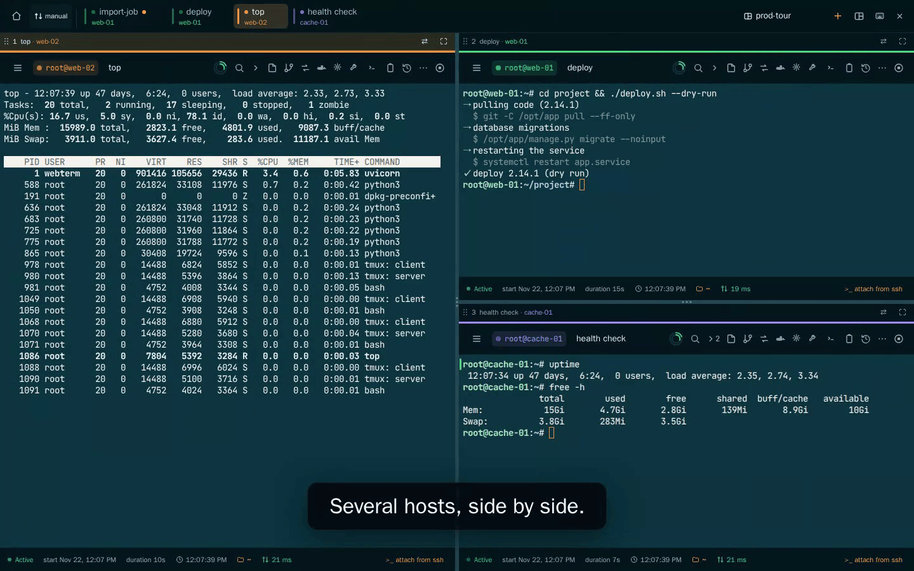
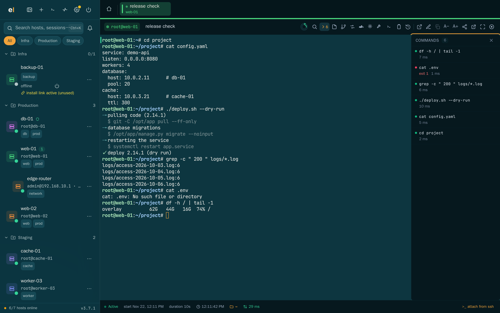
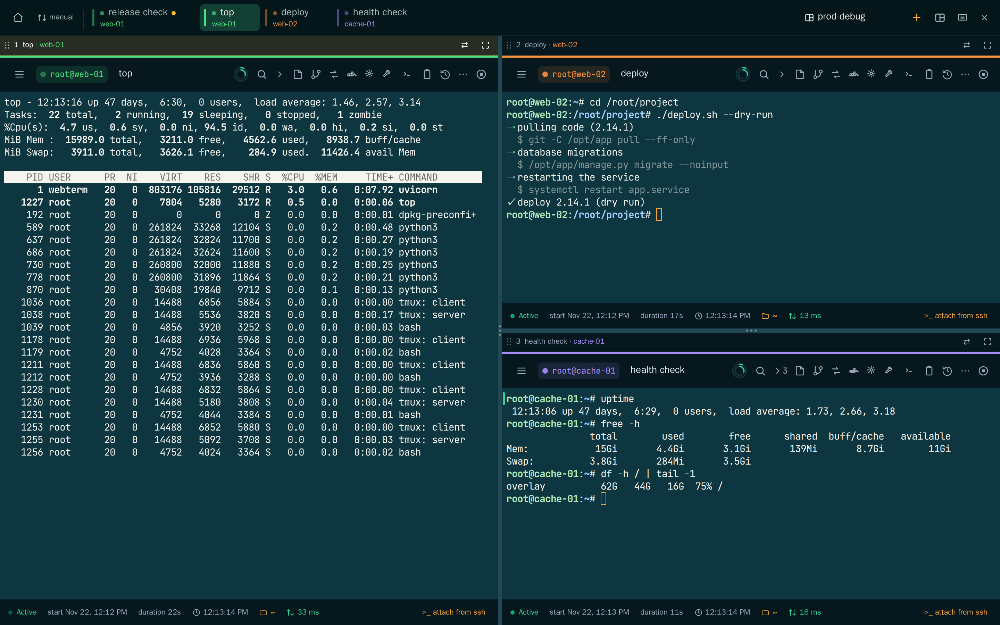
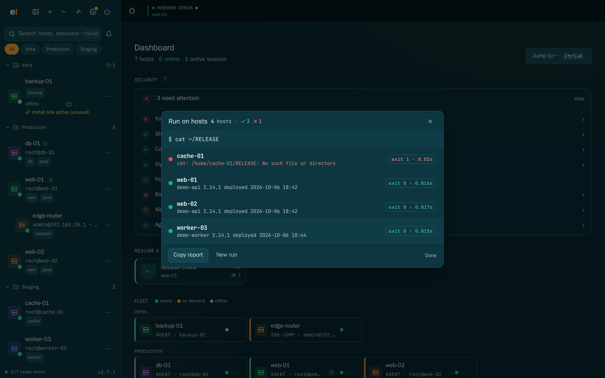

01
Pornești ceva lung
Un build, o migrare, un log pe care îl urmărești. Rulează pe host, în tmux.
web-02 ~ $ ./deploy.sh --all
[1/14] syncing assets…găzduit de tine · open source · MIT
Sesiuni de terminal găzduite de tine, care rămân pornite pe mașinile tale. Deschizi un shell din orice browser, inclusiv de pe telefon, și revii peste ore la același proces și același istoric.

Cum funcționează
Sesiunile deschise prin agent continuă să ruleze în tmux pe host dacă se deconectează browserul sau repornește gateway-ul.
01
Un build, o migrare, un log pe care îl urmărești. Rulează pe host, în tmux.
web-02 ~ $ ./deploy.sh --all
[1/14] syncing assets…02
Închizi laptopul, pică Wi-Fi-ul, repornești sau actualizezi gateway-ul. Hostul nici nu observă.
browser deconectat
host rulează în continuare03
O deschizi de pe telefon sau de la alt birou: același proces, același istoric, chiar pe mai multe dispozitive deodată.
[14/14] done
web-02 ~ $ █Un singur fișier Python, doar cu biblioteca standard, care se conectează el spre gateway. Nimic nu ascultă pe server, iar o mașină din spatele unui NAT merge ca una cu IP public.
Pentru mașinile pe care nu poți instala nimic. Cheile de host sunt fixate, iar hosturile de salt (jump) sunt suportate.
Switch-uri, PDU-uri și echipamente mai vechi, direct sau printr-un agent din aceeași rețea.
Navighezi, editezi într-un editor de cod adevărat, urci și descarci cu reluare, ai un panou git.
Afișezi între două și patru sesiuni alăturate. Alegi unul dintre cele cinci aranjamente și salvezi configurația sub un nume.
O comandă pe mai multe mașini, cu codul de ieșire și ieșirea comenzii pentru fiecare.
O interfață web internă, ca Grafana sau Proxmox, pe propriul subdomeniu, în spatele login-ului tău.
Link-uri care expiră, ca să urmărească sau să scrie cineva într-o sesiune live; înregistrări pe care le poți reda și partaja.
Containere, servicii și console RS232/USB de pe host, fără să ieși din browser.
Capturi din aplicație, realizate pe o flotă demonstrativă.



Se poate, iar EverShell păstrează tmux în centru. Ce adaugă e tot ce e în jurul sesiunii.
| Funcție | SSH + tmux | EverShell |
|---|---|---|
| Sesiunea supraviețuiește unei conexiuni căzute | Cu tmux, dacă îți amintești să-l pornești | Cu agentul, sesiunile continuă să ruleze în tmux pe host |
| Port deschis pe fiecare server | Portul 22, chei de distribuit | Niciunul: agentul se conectează el, merge și după NAT |
| De pe telefon sau un laptop împrumutat | Trebuie client SSH și cheia ta | Orice browser, autentificare cu passkey |
| Fișiere, upload, un editor | scp, sftp, vim | În același panou, după directorul tău |
| Îi arăți unui coleg o sesiune live | Împarți un socket tmux sau ecranul | Un link care expiră, doar citire sau cu scriere |
| Cine ce a făcut și când | Împrăștiat prin logurile fiecărui host | Un singur jurnal de audit, alerte pe ce contează |
Securitate
Cine trece de login primește, pe fiecare host, accesul utilizatorului sub care rulează agentul. Așa că acolo se duce toată munca.
Cum e protejat EverShell →Nou în 3.8
Criptare la repaus. Credențialele salvate și fiecare backup sunt încuiate cu o cheie principală ținută în afara volumului de date. Înregistrările sesiunilor pot fi criptate și ele, iar o înregistrare ștearsă rămâne ștearsă și după o restaurare.
Ce acoperă și ce nu →Plus un al doilea factor proaspăt înainte de un shell pe hosturile pe care le marchezi.
La ce hosturi ajunge fiecare cont și dacă primește shell. OIDC și SCIM.
Un agent rulează doar un update semnat cu cheia ta.
Cine ce a făcut și de unde. Backup-uri zilnice criptate.
Orice server Linux cu Docker și un domeniu care arată spre el. Pe un server Ubuntu sau Debian proaspăt, un singur installer pune Docker, HTTPS, firewall-ul și un backup zilnic criptat.
Cerințe și adăugarea hosturilor →$ git clone https://github.com/sm26449/webterm.git
$ cd webterm && git checkout v3.7.1
$ less install.sh # e făcut să fie citit: rulează ca root
$ sudo ./install.sh --domain term.example.com \
--email you@example.comNu. EverShell e open source sub licența MIT și îl rulezi pe propriul server. Nu există variantă plătită și nici telemetrie.
Sesiunile de pe hosturile cu agent rulează mai departe în tmux pe host și sunt preluate din nou când gateway-ul revine. Sesiunile SSH și telnet trăiesc în gateway, deci acelea se închid la repornire.
Nu. Implicit rulează sub un utilizator dedicat, neprivilegiat, webterm, iar tu decizi ce are voie să facă.
Hosturi Linux cu Python 3.6 sau mai nou pentru agent (cele mai vechi primesc un Python portabil), plus orice vorbește SSH sau telnet: switch-uri, PDU-uri, serverul unui client.
Da: roluri pe host sau folder, acces limitat în timp, passkey-uri și 2FA, autentificare unică prin OIDC, gestionarea automată a conturilor prin SCIM și un jurnal de audit.
Pe serverul tău: sesiunile, înregistrările și baza de date nu pleacă de acolo, iar backup-urile sunt criptate înainte să ajungă oriunde.